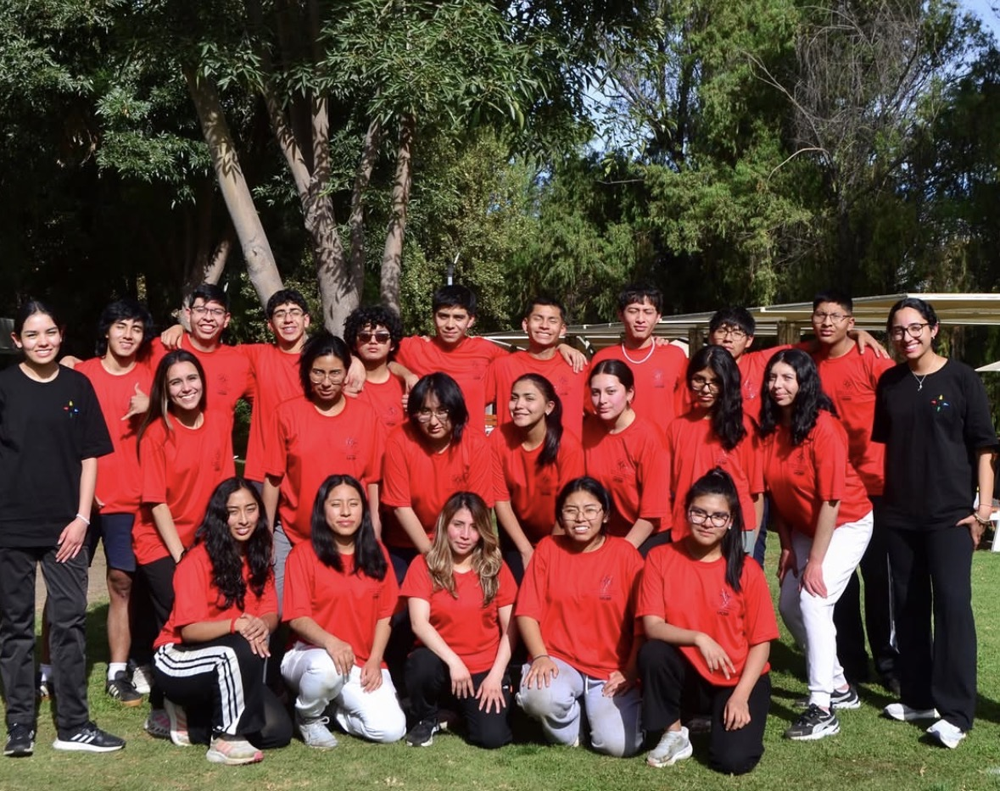

Luciana Mercedes Velarde Cáceres
Estudiante de Administración de Empresas | Universidad Católica San Pablo
"Comprometida con la excelencia, el liderazgo y el aprendizaje continuo."
💼 Mi LinkedIn
Estudiante de Administración de Empresas | Universidad Católica San Pablo
"Comprometida con la excelencia, el liderazgo y el aprendizaje continuo."
💼 Mi LinkedInSoy estudiante de Administración de Empresas en la Universidad Católica San Pablo, actualmente cursando el quinto semestre. Me caracterizo por ser una persona responsable, comprometida y con disposición para aprender continuamente. Tengo interés en el liderazgo, el desarrollo profesional y el uso de herramientas tecnológicas que contribuyan al crecimiento personal y organizacional.
Considero que la ética y la excelencia profesional son pilares fundamentales para el desarrollo personal y laboral. Me esfuerzo por actuar con responsabilidad, honestidad, respeto y compromiso en todas las actividades que realizo. Asimismo, creo en la importancia del aprendizaje continuo y en brindar siempre lo mejor de mí para alcanzar resultados de calidad.
Actualmente me encuentro estudiando Administración de Empresas en la Universidad Católica San Pablo. Me encuentro cursando el quinto semestre, fortaleciendo mis conocimientos y desarrollando competencias que me permitirán desempeñarme con profesionalismo, liderazgo y responsabilidad.
| Curso | Docente |
|---|---|
| Cálculo en Varias Variables | Jorge Chambi |
| Moral | Joseph Zea |
| Introducción a la Computación | Ernesto Cuadros |
Entre mis principales intereses se encuentran el aprendizaje constante, el desarrollo personal y la participación en actividades que contribuyan al bienestar de las personas. Disfruto compartir tiempo con mi familia y amigos, aprender nuevas habilidades, utilizar herramientas tecnológicas y participar en proyectos que generen un impacto positivo en la sociedad.
Mi objetivo es desarrollar competencias de liderazgo, gestión y trabajo en equipo que me permitan contribuir al crecimiento de las organizaciones. Aspiro a continuar capacitándome constantemente, fortaleciendo mis conocimientos y habilidades para afrontar los desafíos del entorno empresarial con ética, innovación y responsabilidad.

Valoro profundamente la amistad como una fuente de apoyo, confianza y crecimiento personal.
📧 luciana.velarde@ucsp.edu.pe
📷 Instagram: @_lucianavelarde_
📘 Facebook: Luciana Velarde Cáceres
💼 LinkedIn: Luciana Mercedes Velarde Cáceres